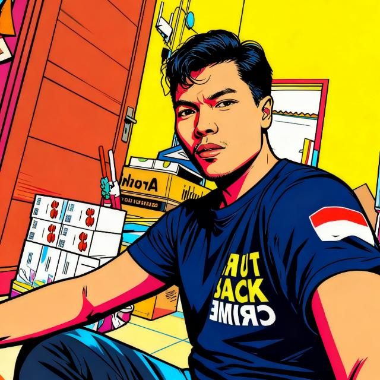

I'm a Front-End Developer with a strong foundation in modern web technologies. I transitioned from a sales and marketing background into software engineering through an intensive, industry-recognized bootcamp at Dicoding Academy.
I specialize in building Progressive Web Apps (PWA), Web Components, and integrating Client-Side AI (TensorFlow.js). My work focuses on delivering high-performance, accessible, and user-centric web solutions that drive measurable business impact.
Certifications
Live Projects
Work Experience
Tech Stack